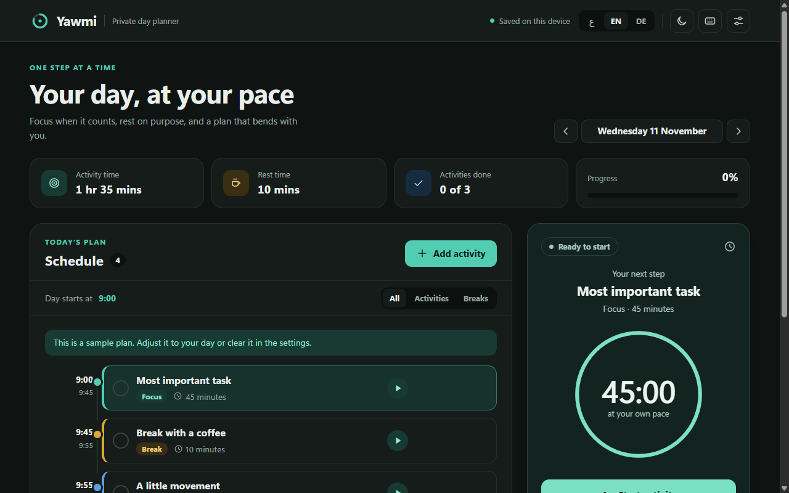
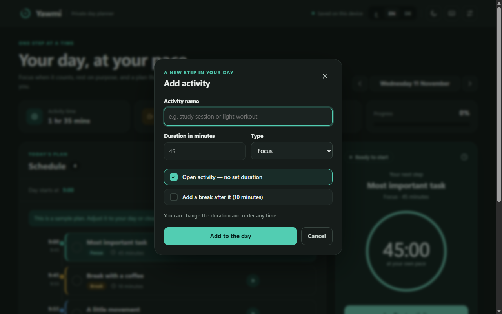

خطّط ليومك بهدوء، بدون إنترنت وبكامل الخصوصية
تطبيق مكتبي متكامل (Windows Desktop) لتنظيم الأنشطة اليومية، وحساب الوقت الفعلي، مع منبه صوتي ذكي ودعم أصيل للغة العربية (RTL) والإنجليزية والألمانية.

تصميم بطاقات الاختيار المحسّن للأنشطة والمدد
تمت إعادة هندسة وتنسيق خيارات «النشاط المفتوح» والاستراحة التلقائية ببطاقات تفاعلية حديثة (`.option-card`) تفصل تماماً بين خيارات المدة المحددة بالدقائق والأنشطة المفتوحة بدون وقت مسبق، مع تجاوب بصري دقيق يمنع أي تداخل بالنصوص أو التفاف خاطئ في العربية والإنجليزية.
- ✓ مربع اختيار مخصص (Custom Checkbox) مع أنيميشن SVG سلس.
- ✓ تعطيل وإتاحة فورية لحقل الدقائق دون تشويه هيكل النافذة.
- ✓ دعم كامل لاتجاه النص RTL و LTR مع خصائص منطقية حديثة.

مزايا صُممت للإنتاجية والهدوء
كل تفصيلة في «يومي» تم بناؤها لتساعدك على التركيز على يومك دون تشتيت أو تعقيد تقني.
خصوصية كاملة — أوفلاين 100%
لا توجد أي خوادم خارجية أو قواعد بيانات سحابية. يتم حفظ جدولك بالكامل في ملف محلي مشفر وآمن داخل جهازك (%APPDATA%\YawmiLocal). لا نتتبع استخدامك ولا نطلب إنشاء أي حساب.
نسخة محمولة بدون تثبيت
حمّل الملف المحمول (Portable Exe) وافتحه بنقرة واحدة. يضم Chromium و Node.js المدمجين دون الحاجة لأي متطلبات مسبقة على نظام Windows.
منبّه صوتي لا يتوقف حتى تستجيب
عند انتهاء الوقت يصدح صوت منبه محلي هادئ ويستمر حتى تضغط «إيقاف المنبه». يعمل حتى لو كان البرنامج مصغراً، مع إشعارات ويندوز الرسمية.
ثلاث لغات بنقرة زر واحدة (عربي · English · Deutsch)
تمت صياغة كافة العبارات والمصطلحات محلياً وبشكل احترافي. عند اختيار العربية يتحول النظام بالكامل إلى نمط اليمين لليسار (RTL) المتناسق مع خط Noto Sans Arabic المدمج.
اختصارات لوحة المفاتيح السريعة
تحكم في يومك بسرعة فائقة دون الحاجة لاستخدام الفأرة في كل خطوة.